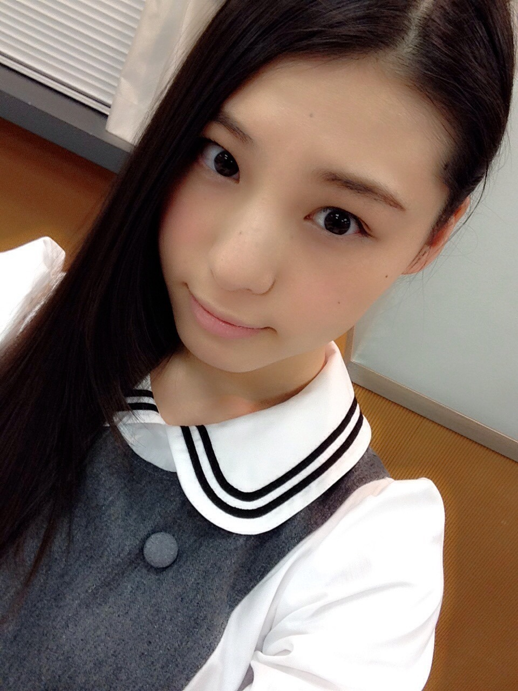
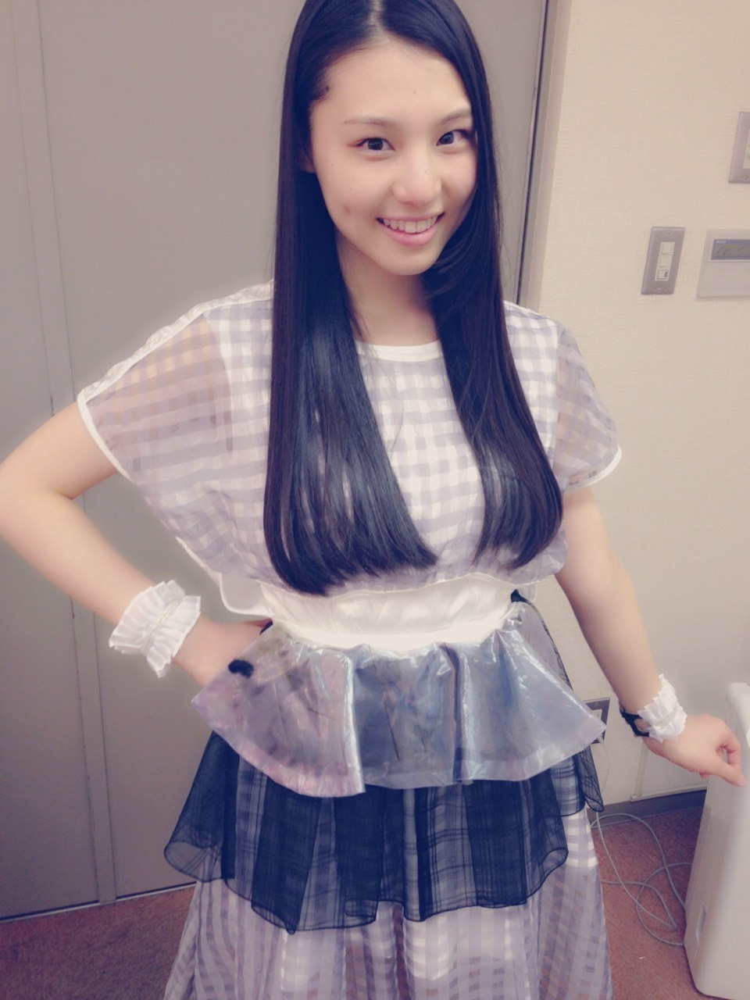
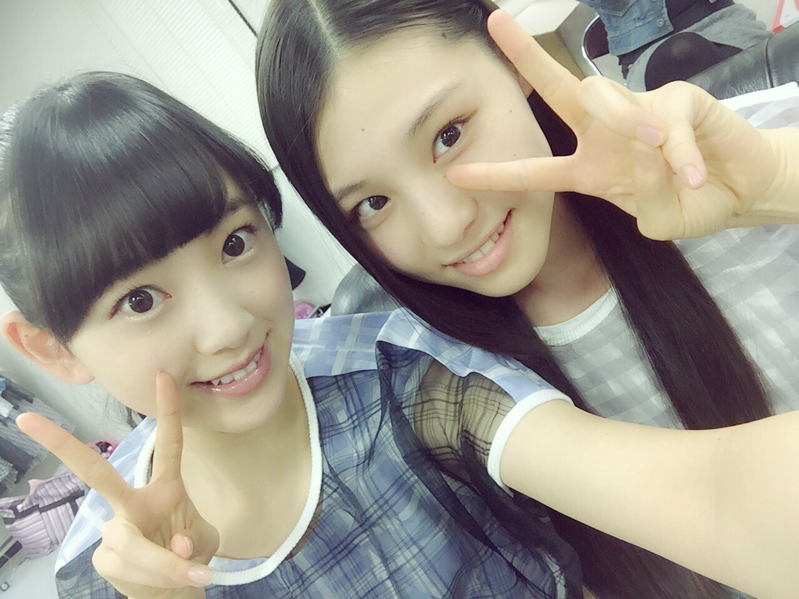
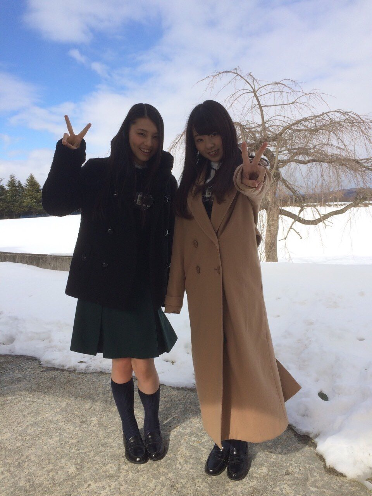

| 2015/02 27 Fri | アンパンマンシーズン 2 _(． ．*)vol.10 |
みなさんこんばんはー！
さがらいおりです！

前回のブログのコメント読んでて、
ライブを見て成長してたねとか
ダンスうまくなってた！とか
かっこよかったよとか
書いてあって、
読みながら泣きそうになりました（ ; ; ）
もっともっと頑張ります！！
ありがとうございました(*^^)v
風邪引いてないですか？
いおりは元気でーす！！
体強いほうなんだー♪♪
新曲の衣装♡

バースデーライブで初披露でした！
この前のスカパー！音楽祭では
テレビ初披露でした！！
しかも生放送で結構緊張しました(ｏ_ｏ*)!!

見てくれた方ありがとうございました♪♪
そーいえば、
MVも公開されたので
時間があればぜひ見てください↓
この曲は何回も聴いて
歌詞の意味を考えると楽しいです *˙︶˙*)ﾉ"
~いおり庵~
 今テレビでやってる番組のオススメある？
今テレビでやってる番組のオススメある？
イッテQとガキ使とめちゃイケは昔から好き
あと、ミレニアムズと
アメトーークも面白いよ！
あとしくじり先生は
一実さんがよく出てる！
あと水曜日のダウンタウンも好き
ゴッドタンも好き
有田のヤラシイも面白い
ブラマヨのアツアツ！と
今夜くらべてみましたも見てる！
あと、オサレもんと浜ちゃんが！もオススメ！
ちなみにいおりは
これ全部見てる(´,,•ω•,,)♡
もし乃木坂メンバーでコンビ組むとしたら誰と組む？
んー、考えとくねー
755はやらないの？
うん、やらないよー( ・0・)
最近ね、
未央奈とたくさん
遊びに行く約束してるの！
富士急にー、
いちご狩りにー、
焼肉でしょー、
工場見学でしょー、
あと海も！
未央奈は那須高原も行きたいらしい
那須高原って、なにがあるんだろう(。-∀-)
11 th特典映像
今回はペアPVということで
まひろさんと撮ってきました(´,,•ω•,,)♡

内容は秘密だけど、
楽しみにしていて下さい♪♪
すごいシュールです。
2 / 24 SamuraiELO
2 / 24 月刊B.L.T
発売中です！
朝日新聞さんのWEBに
インタビューも上がってます！
選抜に入って
雑誌や新聞に載せていただく機会が増えて
本当にありがたいですm(_ _)m
ぜひ見てください：）
i o r i .

コメント(362)
2015/02/27 11:48